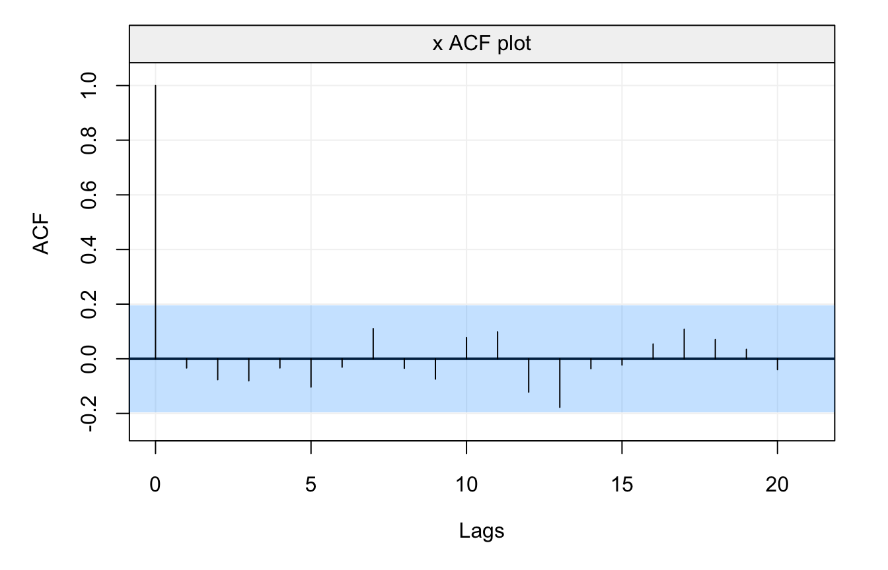
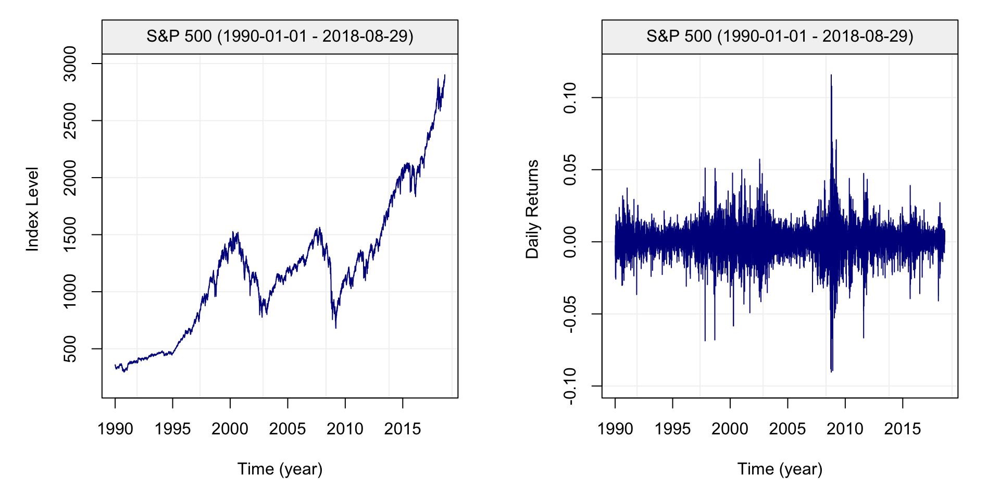
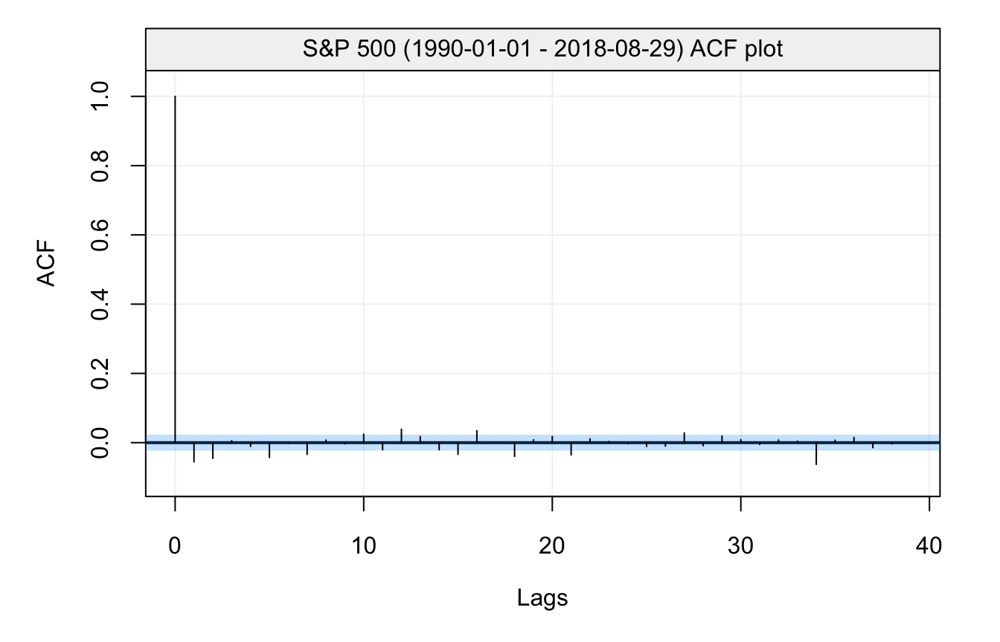
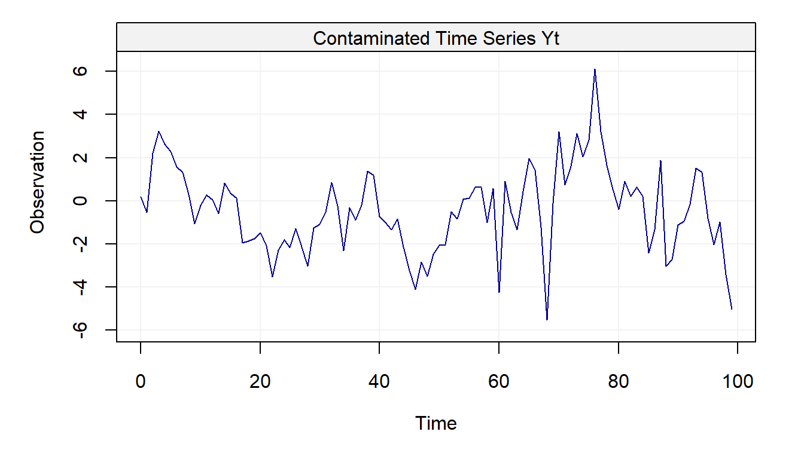
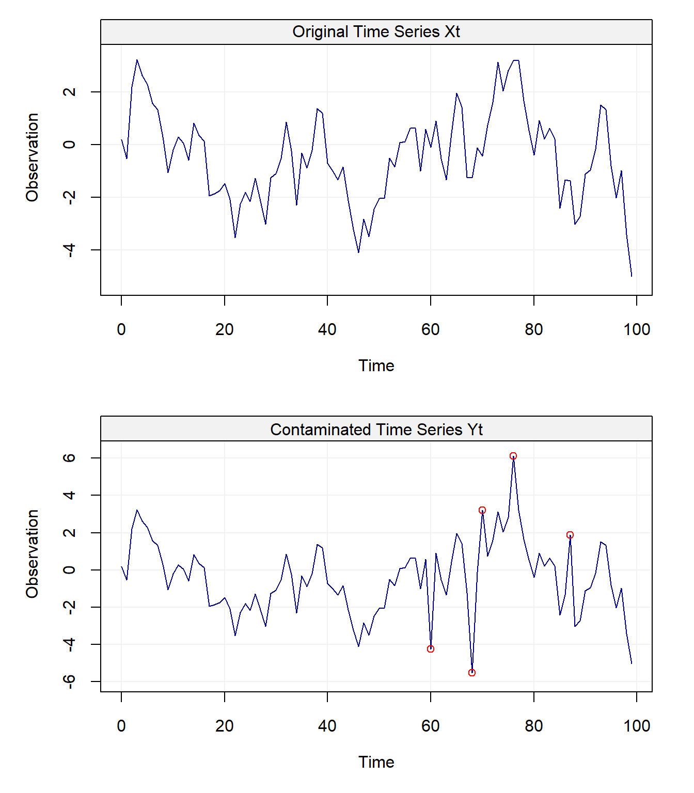
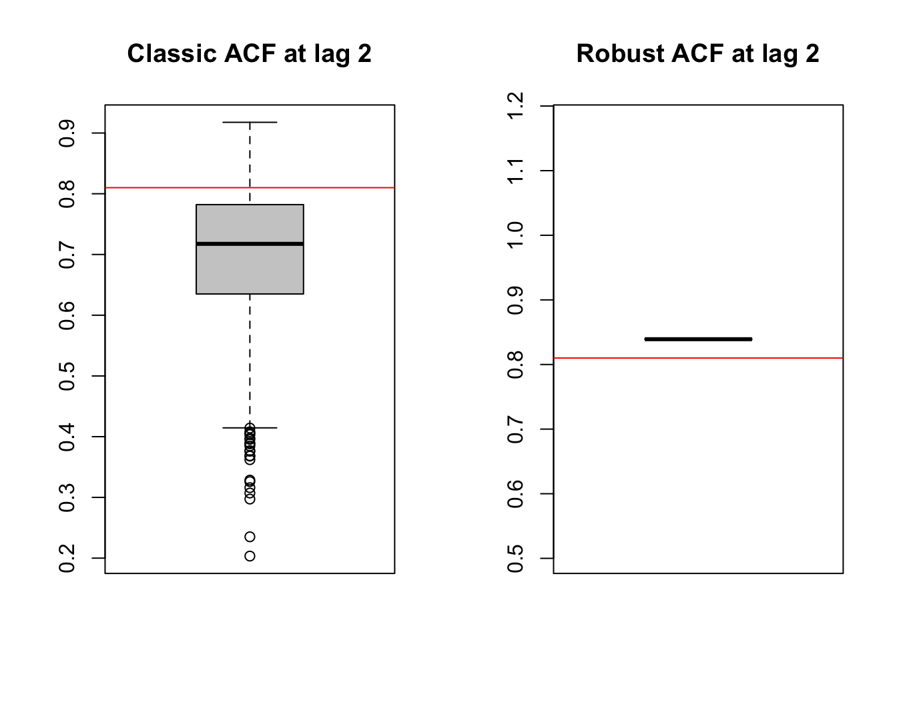

Chapter 3 Fundamental Properties of Time Series
“One of the first things taught in introductory statistics textbooks is that correlation is not causation. It is also one of the first things forgotten.” – Thomas Sowell
To make use of the R code within this chapter you will need to install (if not already done) and load the following libraries:
In this chapter we will discuss and formalize how knowledge about \(X_{t-1}\) (or more generally about all the information from the past, \(\Omega_t\)) can provide us with some information about the properties of \(X_t\). In particular, we will consider the correlation (or covariance) of \(X_t\) at different times such as \(\text{corr} \left(X_t, X_{t+h}\right)\). This “form” of correlation (covariance) is called the autocorrelation (autocovariance) and is a very useful tool in time series analysis. However, if we do not assume that a time series is characterized by a certain form of “stability”, it would be rather difficult to estimate \(\text{corr} \left(X_t, X_{t+h}\right)\) as this quantity would depend on both \(t\) and \(h\) leading to more parameters to estimate than observations available. Therefore, the concept of stationarity (which we will describe further on) is convenient in this context as it allows (among other things) to assume that
\[\text{corr} \left(X_t, X_{t+h}\right) = \text{corr} \left(X_{t+j}, X_{t+h+j}\right), \;\;\; \text{for all $j$},\]
implying that the autocorrelation (or autocovariance) is only a function of the lag between observations, rather than time itself. We will first discuss the concept of autocorrelation in time series, then we will discuss stationarity which will then allow us to adequately define and study estimators of the autocorrelation functions. Before moving on, it is helpful to remember that correlation (or autocorrelation) is only appropriate to measure a very specific kind of dependence, i.e. linear dependence. There are many other forms of dependence as illustrated in the bottom panels of the graph below, which all have a (true) zero correlation:

Figure 3.1: Different forms of dependence and their Pearson’s r values
Several other metrics have been introduced in the literature to assess the degree of “dependence” of two random variables, however this goes beyond the material discussed in this chapter.
3.1 The Autocorrelation and Autocovariance Functions
We will introduce the autocorrelation function by first defining the autocovariance function.
Definition 3.1 The autocovariance function of a series \((X_t)\) is defined as
\[{\gamma_x}\left( {t,t+h} \right) \equiv \text{cov} \left( {{X_t},{X_{t+h}}} \right),\]where the definition of covariance is given by:
\[ \text{cov} \left( {{X_t},{X_{t+h}}} \right) \equiv \mathbb{E}\left[ {{X_t}{X_{t+h}}} \right] - \mathbb{E}\left[ {{X_t}} \right]\mathbb{E}\left[ {{X_{t+h}}} \right]. \]
Similarly, the above expectations are defined as:
\[\begin{aligned} \mathbb{E}\left[ {{X_t}} \right] &\equiv \int\limits_{ - \infty }^\infty {x \cdot {f_t}\left( x \right)dx}, \\ \mathbb{E}\left[ {{X_t}{X_{t+h}}} \right] &\equiv \int\limits_{ - \infty }^\infty {\int\limits_{ - \infty }^\infty {{x_1}{x_2} \cdot f_{t,t+h}\left( {{x_1},{x_2}} \right)d{x_1}d{x_2}} } , \end{aligned} \]
where \({f_t}\left( x \right)\) and \(f_{t,t+h}\left( {{x_1},{x_2}} \right)\) denote, respectively, the density of \(X_t\) and the joint density of the pair \((X_t, X_{t+h})\). Considering the notation used above, it should be clear that \(X_t\) is assumed to be a continous random variable. Since we generally consider stochastic processes with constant zero mean, we often have
\[{\gamma_x}\left( {t,t+h} \right) = \mathbb{E}\left[X_t X_{t+h} \right]. \]
In addition, in the context of this book we will normally drop the subscript referring to the time series (i.e. \(x\) in this case) if it is clear from the context which time series the autocovariance refers to. For example, we generally use \({\gamma}\left( {t,t+h} \right)\) instead of \({\gamma_x}\left( {t,t+h} \right)\). Moreover, the notation is even further simplified when the covariance of \(X_t\) and \(X_{t+h}\) is the same as that of \(X_{t+j}\) and \(X_{t+h+j}\) (for all \(j\)), i.e. the covariance depends only on the time between observations and not on the specific time \(t\). This is consequence of an important property called stationarity that was mentioned earlier and will be discussed in the next section. In this case, we simply use to following notation:
\[\gamma \left( {h} \right) = \text{cov} \left( X_t , X_{t+h} \right). \]
This is the definition of autocovariance that will be used from this point onwards and therefore this notation will generally be used throughout the text thereby implying certain properties for the process \((X_t)\) (i.e. stationarity) . With this in mind, several remarks can be made on the autocovariance function:
- The autocovariance function is symmetric. That is, \({\gamma}\left( {h} \right) = {\gamma}\left( -h \right)\) since \(\text{cov} \left( {{X_t},{X_{t+h}}} \right) = \text{cov} \left( X_{t+h},X_{t} \right)\).
- The autocovariance function “contains” the variance of the process as \(\text{var} \left( X_{t} \right) = {\gamma}\left( 0 \right)\).
- We have that \(|\gamma(h)| \leq \gamma(0)\) for all \(h\). The proof of this inequality is direct and follows from the Cauchy-Schwarz inequality, i.e. \[ \begin{aligned} \left(|\gamma(h)| \right)^2 &= \gamma(h)^2 = \left(\mathbb{E}\left[\left(X_t - \mathbb{E}[X_t] \right)\left(X_{t+h} - \mathbb{E}[X_{t+h}] \right)\right]\right)^2\\ &\leq \mathbb{E}\left[\left(X_t - \mathbb{E}[X_t] \right)^2 \right] \mathbb{E}\left[\left(X_{t+h} - \mathbb{E}[X_{t+h}] \right)^2 \right] = \gamma(0)^2. \end{aligned} \]
- Just as any covariance, \({\gamma}\left( {h} \right)\) is “scale dependent” since \({\gamma}\left( {h} \right) \in \mathbb{R}\), or \(-\infty \le {\gamma}\left( {h} \right) \le +\infty\). We therefore have:
- if \(\left| {\gamma}\left( {h} \right) \right|\) is “close” to zero, then \(X_t\) and \(X_{t+h}\) are “weakly” (linearly) dependent;
- if \(\left| {\gamma}\left( {h} \right) \right|\) is “far” from zero, then the two random variables present a “strong” (linear) dependence. However it is generally difficult to asses what “close” and “far” from zero means in this case.
- \({\gamma}\left( {h} \right)=0\) does not imply that \(X_t\) and \(X_{t+h}\) are independent but simply that they are uncorrelated. The independence is only implied by \({\gamma}\left( {h} \right)=0\) in the jointly Gaussian case.
As hinted in the introduction, an important related statistic is the correlation of \(X_t\) with \(X_{t+h}\) or autocorrelation, which is defined as
\[\rho \left( h \right) = \text{corr}\left( {{X_t},{X_{t + h}}} \right) = \frac{{\text{cov}\left( {{X_t},{X_{t + h}}} \right)}}{{{\sigma _{{X_t}}}{\sigma _{{X_{t + h}}}}}} = \frac{\gamma(h) }{\gamma(0)}.\]
Similarly to \(\gamma(h)\), it is important to note that the above notation implies that the autocorrelation function is only a function of the lag \(h\) between observations. Thus, autocovariances and autocorrelations are one possible way to describe the joint distribution of a time series. Indeed, the correlation of \(X_t\) with \(X_{t+h}\) is an obvious measure of how persistent a time series is.
Remember that just as with any correlation:
- \(\rho \left( h \right)\) is “scale free” so it is much easier to interpret than \(\gamma(h)\).
- \(|\rho \left( h \right)| \leq 1\) since \(|\gamma(h)| \leq \gamma(0)\).
- Causation and correlation are two very different things!
3.1.1 A Fundamental Representation
Autocovariances and autocorrelations also turn out to be very useful tools as they are one of the fundamental representations of time series. Indeed, if we consider a zero mean normally distributed process, it is clear that its joint distribution is fully characterized by the autocovariances \(\mathbb{E}[X_t X_{t+h}]\) (since the joint probability density only depends of these covariances). Once we know the autocovariances we know everything there is to know about the process and therefore:
if two (Gaussian) processes have the same autocovariance function, then they are the same process.
3.1.2 Admissible Autocorrelation Functions 😱
Since the autocorrelation function is one of the fundamental representations of time series, it implies that one might be able to define a stochastic process by picking a set of autocorrelation values (assuming for example that \(\text{var}(X_t) = 1\)). However, it turns out that not every collection of numbers, say \(\{\rho_1, \rho_2, ...\},\) can represent the autocorrelation of a process. Indeed, two conditions are required to ensure the validity of an autocorrelation sequence:
- \(\operatorname{max}_j \; \left| \rho_j \right| \leq 1\).
- \(\text{var} \left[\sum_{j = 0}^\infty \alpha_j X_{t-j} \right] \geq 0 \;\) for all \(\{\alpha_0, \alpha_1, ...\}\).
The first condition is obvious and simply reflects the fact that \(|\rho \left( h \right)| \leq 1\) but the second is far more difficult to verify. To further our understanding of the latter we let \(\alpha_j = 0\) for \(j > 1\) and see that in this case the second condition implies that
\[\text{var} \left[ \alpha_0 X_{t} + \alpha_1 X_{t-1} \right] = \gamma_0 \begin{bmatrix} \alpha_0 & \alpha_1 \end{bmatrix} \begin{bmatrix} 1 & \rho_1\\ \rho_1 & 1 \end{bmatrix} \begin{bmatrix} \alpha_0 \\ \alpha_1 \end{bmatrix} \geq 0, \]
where \(\gamma_0\) is a more compact notation for \(\gamma(0)\). Thus, the matrix
\[ \boldsymbol{A}_1 = \begin{bmatrix} 1 & \rho_1\\ \rho_1 & 1 \end{bmatrix}, \]
must be positive semi-definite. Taking the determinant we have
\[\operatorname{det} \left(\boldsymbol{A}_1\right) = 1 - \rho_1^2, \]
implying that the condition \(|\rho_1| \leq 1\) must be respected. Now, let \(\alpha_j = 0\) for \(j > 2\), then we must verify that:
\[\text{var} \left[ \alpha_0 X_{t} + \alpha_1 X_{t-1} + \alpha_2 X_{t-2} \right] = \gamma_0 \begin{bmatrix} \alpha_0 & \alpha_1 &\alpha_2 \end{bmatrix} \begin{bmatrix} 1 & \rho_1 & \rho_2\\ \rho_1 & 1 & \rho_1 \\ \rho_2 & \rho_1 & 1 \end{bmatrix} \begin{bmatrix} \alpha_0 \\ \alpha_1 \\ \alpha_2 \end{bmatrix} \geq 0. \]
Again, this implies that the matrix
\[ \boldsymbol{A}_2 = \begin{bmatrix} 1 & \rho_1 & \rho_2\\ \rho_1 & 1 & \rho_1 \\ \rho_2 & \rho_1 & 1 \end{bmatrix}, \]
must be positive semi-definite and it is easy to verify that
\[\operatorname{det} \left(\boldsymbol{A}_2\right) = \left(1 - \rho_2 \right)\left(- 2 \rho_1^2 + \rho_2 + 1\right). \]
Thus, this implies that
\[\begin{aligned} &- 2 \rho_1^2 + \rho_2 + 1 \geq 0 \Rightarrow 1 \geq \rho_2 \geq 2 \rho_1^2 - 1 \\ &\Rightarrow 1 - \rho_1^2 \geq \rho_2 - \rho_1^2 \geq -(1 - \rho_1^2)\\ &\Rightarrow 1 \geq \frac{\rho_2 - \rho_1^2 }{1 - \rho_1^2} \geq -1. \end{aligned}\]
Therefore, \(\rho_1\) and \(\rho_2\) must lie in a parabolic shaped region defined by the above inequalities as illustrated in Figure 3.2.
Figure 3.2: Admissible autocorrelation functions
From our derivation, it is clear that the restrictions on the autocorrelation are very complicated, thereby justifying the need for other forms of fundamental representation which we will explore later in this text. Before moving on to the estimation of the autocorrelation and autocovariance functions, we must first discuss the stationarity of \((X_t)\), which will provide a convenient framework in which \(\gamma(h)\) and \(\rho(h)\) can be used (rather that \(\gamma(t,t+h)\) for example) and (easily) estimated.
3.2 Stationarity
There are two kinds of stationarity that are commonly used. They are defined as follows:
These types of stationarity are not equivalent and the presence of one kind of stationarity does not imply the other. That is, a time series can be strongly stationary but not weakly stationary and vice versa. In some cases, a time series can be both strongly and weakly stationary and this occurs, for example, in the (jointly) Gaussian case. Stationarity of \((X_t)\) matters because it provides the framework in which averaging dependent data makes sense, thereby allowing us to easily obtain estimates for certain quantities such as autocorrelation.
Several remarks and comments can be made on these definitions:
As mentioned earlier, strong stationarity does not imply weak stationarity. For example, an \(iid\) Cauchy process is strongly but not weakly stationary (why? 🤔).
Weak stationarity does not imply strong stationarity. For example, consider the following weak white noise process: \[\begin{equation*} X_t = \begin{cases} U_{t} & \quad \text{if } t \in \{2k:\, k\in \mathbb{Z} \}, \\ V_{t} & \quad \text{if } t \in \{2k+1:\, k\in \mathbb{Z} \},\\ \end{cases} \end{equation*}\] where \({U_t} \mathop \sim \limits^{iid} N\left( {1,1} \right)\) and \({V_t}\mathop \sim \limits^{iid} \mathcal{E}\left( 1 \right)\) is a weakly stationary process that is not strongly stationary.
- Strong stationarity combined with bounded values of \(\mathbb{E}[X_t^2]\) implies weak stationarity.
Weak stationarity combined with normally distributed processes implies strong stationarity.
3.2.1 Assessing Weak Stationarity of Time Series Models
It is important to understand how to verify if a postulated model is (weakly) stationary. In order to do so, we must ensure that our model satisfies the following three properties:
- \(\mathbb{E}\left[X_t \right] = \mu_t = \mu < \infty\),
- \(\text{var}\left[X_t \right] = \sigma^2_t = \sigma^2 < \infty\),
- \(\text{cov}\left(X_t, X_{t+h} \right) = \gamma \left(h\right)\) (i.e. the autocovariance only depends on \(h\) and not on \(t\)).
In the following examples, we evaluate the stationarity of the processes introduced in Section 2.3.
Example 3.1 (Gaussian White Noise) It is easy to verify that this process is stationary. Indeed, we have:
- \(\mathbb{E}\left[ {{X_t}} \right] = 0\),
- \(\gamma(0) = \sigma^2 < \infty\),
- \(\gamma(h) = 0\) for \(|h| > 0\).
Example 3.2 (Random Walk) To evaluate the stationarity of this process, we first derive its properties:
- We begin by calculating the expectation of the process: \[ \mathbb{E}\left[ {{X_t}} \right] = \mathbb{E}\left[ {{X_{t - 1}} + {W_t}} \right] = \mathbb{E}\left[ {\sum\limits_{i = 1}^t {{W_i}} + {X_0}} \right] = \mathbb{E}\left[ {\sum\limits_{i = 1}^t {{W_i}} } \right] + {c} = c. \]
Observe that the mean obtained is constant since it depends only on the value of the first term in the sequence.
Next, after finding the mean to be constant, we calculate the variance to check stationarity: \[\begin{aligned} \text{var}\left( {{X_t}} \right) &= \text{var}\left( {\sum\limits_{i = 1}^t {{W_t}} + {X_0}} \right) = \text{var}\left( {\sum\limits_{i = 1}^t {{W_i}} } \right) + \underbrace {\text{var}\left( {{X_0}} \right)}_{= 0} \\ &= \sum\limits_{i = 1}^t {\text{var}\left( {{W_i}} \right)} = t \sigma_w^2, \end{aligned}\] where \(\sigma_w^2 = \text{var}(W_t)\). Therefore, the variance depends on time \(t\), contradicting our second property. Moreover, we have: \[\mathop {\lim }\limits_{t \to \infty } \; \text{var}\left(X_t\right) = \infty.\] This process is therefore not weakly stationary.
Regarding the autocovariance of a random walk, we have: \[\begin{aligned} \gamma \left( h \right) &= \text{cov}\left( {{X_t},{X_{t + h}}} \right) = \text{cov}\left( {\sum\limits_{i = 1}^t {{W_i}} ,\sum\limits_{j = 1}^{t + h} {{W_j}} } \right) = \text{cov}\left( {\sum\limits_{i = 1}^t {{W_i}} ,\sum\limits_{j = 1}^t {{W_j}} } \right)\\ &= \min \left( {t,t + h} \right)\sigma _w^2 = \left( {t + \min \left( {0,h} \right)} \right)\sigma _w^2, \end{aligned} \] which further illustrates the non-stationarity of this process.
Moreover, the autocorrelation of this process is given by
\[\rho (h) = \frac{t + \min \left( {0,h} \right)}{\sqrt{t}\sqrt{t+h}},\]
implying (for a fixed \(h\)) that
\[\mathop {\lim }\limits_{t \to \infty } \; \rho(h) = 1.\]
Note that using \(\gamma (h)\) and \(\rho (h)\) in this context is actually an abuse of notation since both of these quantites are a function of \(h\) and \(t\) for a random walk process.In the following simulated example, we illustrate the non-stationary feature of such a process:
# Number of simulated processes
B = 200
# Length of random walks
n = 1000
# Output matrix
out = matrix(NA,B,n)
# Set seed for reproducibility
set.seed(6182)
# Simulate Data
for (i in seq_len(B)){
# Simulate random walk
Xt = gen_gts(n, RW(gamma = 1))
# Store process
out[i,] = Xt
}
# Plot random walks
plot(NA, xlim = c(1,n), ylim = range(out), xlab = "Time", ylab = " ")
grid()
color = sample(topo.colors(B, alpha = 0.5))
grid()
for (i in seq_len(B)){
lines(out[i,], col = color[i])
}
# Add 95% confidence region
lines(1:n, 1.96*sqrt(1:n), col = 2, lwd = 2, lty = 2)
lines(1:n, -1.96*sqrt(1:n), col = 2, lwd = 2, lty = 2)Figure 3.3: Two hundred simulated random walks.
In the plot above, two hundred simulated random walks are plotted along with theoretical 95% confidence intervals (red-dashed lines). The relationship between time and variance can clearly be observed (i.e. the variance of the process increases with the time).
Example 3.3 (Moving Average of Order 1) Similarly to our previous examples, we attempt to verify the stationary properties for the MA(1) model defined in the previous chapter:
- \[ \mathbb{E}\left[ {{X_t}} \right] = \mathbb{E}\left[ {{\theta_1}{W_{t - 1}} + {W_t}} \right] = {\theta_1} \mathbb{E} \left[ {{W_{t - 1}}} \right] + \mathbb{E}\left[ {{W_t}} \right] = 0. \]
- \[\text{var} \left( {{X_t}} \right) = \theta_1^2 \text{var} \left( W_{t - 1}\right) + \text{var} \left( W_{t}\right) = \left(1 + \theta^2 \right) \sigma^2_w.\]
- Regarding the autocovariance, we have \[\begin{aligned} \text{cov}\left( {{X_t},{X_{t + h}}} \right) &= \mathbb{E}\left[ {\left( {{X_t} - \mathbb{E}\left[ {{X_t}} \right]} \right)\left( {{X_{t + h}} - \mathbb{E}\left[ {{X_{t + h}}} \right]} \right)} \right] = \mathbb{E}\left[ {{X_t}{X_{t + h}}} \right] \\ &= \mathbb{E}\left[ {\left( {{\theta}{W_{t - 1}} + {W_t}} \right)\left( {{\theta }{W_{t + h - 1}} + {W_{t + h}}} \right)} \right] \\ &= \mathbb{E}\left[ {\theta^2{W_{t - 1}}{W_{t + h - 1}} + \theta {W_t}{W_{t + h}} + {\theta}{W_{t - 1}}{W_{t + h}} + {W_t}{W_{t + h}}} \right]. \\ \end{aligned} \] It is easy to see that \(\mathbb{E}\left[ {{W_t}{W_{t + h}}} \right] = {\boldsymbol{1}_{\left\{ {h = 0} \right\}}}\sigma _w^2\) and therefore, we obtain \[\text{cov} \left( {{X_t},{X_{t + h}}} \right) = \left( {\theta^2{ \boldsymbol{1}_{\left\{ {h = 0} \right\}}} + {\theta}{\boldsymbol{1}_{\left\{ {h = 1} \right\}}} + {\theta}{\boldsymbol{1}_{\left\{ {h = - 1} \right\}}} + {\boldsymbol{1}_{\left\{ {h = 0} \right\}}}} \right)\sigma _w^2\] implying the following autocovariance function: \[\gamma \left( h \right) = \left\{ {\begin{array}{*{20}{c}} {\left( {\theta^2 + 1} \right)\sigma _w^2}&{h = 0} \\ {{\theta}\sigma _w^2}&{\left| h \right| = 1} \\ 0&{\left| h \right| > 1} \end{array}} \right. .\] Therefore, an MA(1) process is weakly stationary since both the mean and variance are constant over time and its covariance function is only a function of the lag \((h)\). Finally, we can easily obtain the autocorrelation for this process, which is given by \[\rho \left( h \right) = \left\{ {\begin{array}{*{20}{c}} 1&{h = 0} \\ {\frac{{{\theta}\sigma _w^2}}{{\left( {\theta^2 + 1} \right)\sigma _w^2}} = \frac{{{\theta}}}{{\theta^2 + 1}}}&{\left| h \right| = 1} \\ 0&{\left| h \right| > 1} \end{array}} \right. .\] Interestingly, we can note that \(|\rho(1)| \leq 0.5\).
Example 3.4 (Autoregressive of Order 1) As another example, we shall verify the stationary properties for the AR(1) model defined in the previous chapter.
Using the backsubstitution technique, we can rearrange an AR(1) process so that it is written in a more compact form, i.e.
\[\begin{aligned} {X_t} & = {\phi }{X_{t - 1}} + {W_t} = \phi \left[ {\phi {X_{t - 2}} + {W_{t - 1}}} \right] + {W_t} = {\phi ^2}{X_{t - 2}} + \phi {W_{t - 1}} + {W_t} \\ & \vdots \\ & = {\phi ^k}{X_{t-k}} + \sum\limits_{j = 0}^{k - 1} {{\phi ^j}{W_{t - j}}} . \end{aligned} \]
By taking the limit in \(k\) (which is perfectly valid as we assume \(t \in \mathbb{Z}\)) and assuming \(|\phi|<1\), we obtain
\[\begin{aligned} X_t = \mathop {\lim }\limits_{k \to \infty} \; {X_t} = \sum\limits_{j = 0}^{\infty} {{\phi ^j}{W_{t - j}}} \end{aligned} \]
and therefore such a process can be interpreted as a linear combination of white noise \((W_t)\) and corresponds (as we will observe later on) to an MA(\(\infty\)). In addition, the requirement \(\left| \phi \right| < 1\) turns out to be extremely useful as the above formula is related to a geometric series which would diverge if \(\phi \geq 1\) (for example when \(\phi = 1\) we have a random walk). Indeed, remember that an infinite (converging) geometric series is given by
\[\sum\limits_{k = 0}^\infty \, a{{r^k}} = \frac{a}{{1 - r}}, \; {\text{ if }}\left| r \right| < 1.\]
The origin of this requirement comes from needing to ensure that the characteristic polynomial solution for an AR(1) lies outside the unit circle thereby ensuring that the process is stationary. Indeed, if \(\phi \ge 1\), the process would not converge.
With this setup, we demonstrate how crucial this property is by calculating each of the requirements of a stationary process.
- First, we will check if the mean is stationary. In this case, we choose to use limits in order to derive the expectation \[\begin{aligned} \mathbb{E}\left[ {{X_t}} \right] &= \mathop {\lim }\limits_{k \to \infty } \mathbb{E}\left[ {{\phi^k}{X_{t-k}} + \sum\limits_{j = 0}^{k - 1} {\phi^j{W_{t - j}}} } \right] \\ &= \mathop {\lim }\limits_{k \to \infty } \, \underbrace {{\phi ^k}{\mathbb{E}[X_{t-k}]}}_{= 0} + \mathop {\lim }\limits_{k \to \infty } \, \sum\limits_{j = 0}^{k - 1} {\phi^j\underbrace {\mathbb{E}\left[ {{W_{t - j}}} \right]}_{ = 0}} = 0. \end{aligned} \] As expected, the mean is zero and, hence, the first criterion for weak stationarity is satisfied.
- Next, we determine the variance of the process \[\begin{aligned} \text{var}\left( {{X_t}} \right) &= \mathop {\lim }\limits_{k \to \infty } \text{var}\left( {{\phi^k}{X_{t-k}} + \sum\limits_{j = 0}^{k - 1} {\phi^j{W_{t - j}}} } \right) = \mathop {\lim }\limits_{k \to \infty } \sum\limits_{j = 0}^{k - 1} {\phi ^{2j} \text{var}\left( {{W_{t - j}}} \right)} \\ &= \mathop {\lim }\limits_{k \to \infty } \sum\limits_{j = 0}^{k - 1} \sigma _W^2 \, {\phi ^{2j}} = \underbrace {\frac{\sigma _W^2}{{1 - {\phi ^2}}}.}_{\begin{subarray}{l} {\text{Geom. Series}} \end{subarray}} \end{aligned} \] Once again, the above result only holds because we are able to use the convergence of the geometric series as a result of \(\left| \phi \right| < 1\).
- Finally, we consider the autocovariance of an AR(1). For \(h > 0\), we have \[\gamma \left( h \right) = \text{cov}\left( {{X_t},{X_{t + h}}} \right) = \phi \text{cov}\left( {{X_t},{X_{t + h - 1}}} \right) = \phi \, \gamma \left( h-1 \right).\] Therefore, using the symmetry of autocovariance, we find that \[\gamma \left( h \right) = \phi^{|h|} \, \gamma(0).\]
Both the mean and variance do not depend on time. In addition, the autocovariance function can be viewed as a function that only depends on the time lag \(h\) and, thus, the AR(1) process is weakly stationary if \(\left| \phi \right| < 1\). Lastly, we can obtain the autocorrelation for this process. Indeed, for \(h > 0\), we have
\[\rho \left( h \right) = \frac{{\gamma \left( h \right)}}{{\gamma \left( 0 \right)}} = \frac{{\phi \gamma \left( {h - 1} \right)}}{{\gamma \left( 0 \right)}} = \phi \rho \left( {h - 1} \right).\]
After simplifying, we obtain
\[\rho \left( h \right) = {\phi^{|h|}}.\]
Thus, the autocorrelation function for an AR(1) exhibits a geometric decay, meaning that as \(|\phi|\) gets smaller the autocorrelation reaches zero at a faster rate (on the contrary, if \(|\phi|\) is close to 1 then the decay rate is slower).3.3 Estimation of Moments (Stationary Processes)
In this section, we discuss how moments and related quantities of stationary processes can be estimated. Informally speaking, the use of “averages” is meaningful for such processes suggesting that classical moments estimators can be employed. Indeed, suppose that one is interested in estimating \(\alpha \equiv \mathbb{E}[m (X_t)]\), where \(m(\cdot)\) is a known function of \(X_t\). If \(X_t\) is a strongly stationary process, we have
\[\alpha = \int m(x) \, f(x) dx\]
where \(f(x)\) denotes the density of \(X_t, \; \forall t\). Replacing \(f(x)\) by \(f_n(x)\), the empirical density, we obtain the following estimator
\[\hat{\alpha} = \frac{1}{n} \sum_{i = 1}^n m\left(x_i\right).\]
In the next subsection, we examine how this simple idea can be used to estimate the mean, autocovariance and autocorrelation functions. Moreover, we discuss some of the properties of these estimators.
3.3.1 Estimation of the Mean Function
If a time series is stationary, the mean function is constant and a possible estimator of this quantity is, as discussed above, given by
\[\bar{X} = {\frac{1}{n}\sum\limits_{t = 1}^n {{X_t}} }.\]
Naturally, the \(k\)-th moment, say \(\beta_k \equiv \mathbb{E}[X_t^k]\) can be estimated by
\[\hat{\beta}_k = {\frac{1}{n}\sum\limits_{t = 1}^n {{X_t^k}} }, \;\; k \in \left\{x \in \mathbb{N} : \, 0 < x < \infty \right\}.\]
The variance of such an estimator can be derived as follows:
\[\begin{equation} \begin{aligned} \text{var} \left( \hat{\beta}_k \right) &= \text{var} \left( {\frac{1}{n}\sum\limits_{t = 1}^n {{X_t^k}} } \right) \\ &= \frac{1}{{{n^2}}}\text{var} \left( {{{\left[ {\begin{array}{*{20}{c}} 1& \cdots &1 \end{array}} \right]}_{1 \times n}}{{\left[ {\begin{array}{*{20}{c}} {{X_1^k}} \\ \vdots \\ {{X_n^k}} \end{array}} \right]}_{n \times 1}}} \right) \\ &= \frac{1}{{{n^2}}}{\left[ {\begin{array}{*{20}{c}} 1& \cdots &1 \end{array}} \right]_{1 \times n}} \, \boldsymbol{\Sigma}(k) \, {\left[ {\begin{array}{*{20}{c}} 1 \\ \vdots \\ 1 \end{array}} \right]_{n \times 1}}, \end{aligned} \tag{3.1} \end{equation}\]where \(\boldsymbol{\Sigma}(k) \in \mathbb{R}^{n \times n}\) and its \(i\)-th, \(j\)-th element is given by
\[ \left(\boldsymbol{\Sigma}(k)\right)_{i,j} = \text{cov} \left(X_i^k, X_j^k\right).\]
In the case \(k = 1\), (3.1) can easily be further simplified. Indeed, we have
\[\begin{aligned} \text{var} \left( {\bar X} \right) &= \text{var} \left( {\frac{1}{n}\sum\limits_{t = 1}^n {{X_t}} } \right) \\ &= \frac{1}{{{n^2}}}{\left[ {\begin{array}{*{20}{c}} 1& \cdots &1 \end{array}} \right]_{1 \times n}}\left[ {\begin{array}{*{20}{c}} {\gamma \left( 0 \right)}&{\gamma \left( 1 \right)}& \cdots &{\gamma \left( {n - 1} \right)} \\ {\gamma \left( 1 \right)}&{\gamma \left( 0 \right)}&{}& \vdots \\ \vdots &{}& \ddots & \vdots \\ {\gamma \left( {n - 1} \right)}& \cdots & \cdots &{\gamma \left( 0 \right)} \end{array}} \right]_{n \times n}{\left[ {\begin{array}{*{20}{c}} 1 \\ \vdots \\ 1 \end{array}} \right]_{n \times 1}} \\ &= \frac{1}{{{n^2}}}\left( {n\gamma \left( 0 \right) + 2\left( {n - 1} \right)\gamma \left( 1 \right) + 2\left( {n - 2} \right)\gamma \left( 2 \right) + \cdots + 2\gamma \left( {n - 1} \right)} \right) \\ &= \frac{1}{n}\sum\limits_{h = - n}^n {\left( {1 - \frac{{\left| h \right|}}{n}} \right)\gamma \left( h \right)} . \\ \end{aligned} \]
Obviously, when \(X_t\) is a white noise process, the above formula reduces to the usual \(\text{var} \left( {\bar X} \right) = \sigma^2_w/n\). In the following example, we consider the case of an AR(1) process and discuss how \(\text{var} \left( {\bar X} \right)\) can be obtained or estimated.
Unfortunately, deriving such an exact formula is often difficult when considering more complex models. However, asymptotic approximations are often employed to simplify the calculation. For example, in our case we have
\[\mathop {\lim }\limits_{n \to \infty } \; n \text{var} \left( {\bar X} \right) = \frac{\sigma_w^2}{\left(1-\phi\right)^2},\]
providing the following approximate formula:
\[\text{var} \left( {\bar X} \right) \approx \frac{\sigma_w^2}{n \left(1-\phi\right)^2}.\]
Alternatively, simulation methods can also be employed. For example, a possible strategy would be parametric bootstrap.
Example 3.6 Parametric bootstrap can be implemented in the following manner:
- Simulate a new sample under the postulated model, i.e. \(X_t^* \sim F_{\boldsymbol{\theta}}\) (note: if \(\boldsymbol{\theta}\) is unknown it can be replaced by \(\hat{\boldsymbol{\theta}}\), a suitable estimator).
- Compute the statistics of interest on the simulated sample \((X_t^*)\).
- Repeat Steps 1 and 2 \(B\) times where \(B\) is sufficiently “large” (typically \(100 \leq B \leq 10000\)).
- Compute the empirical variance of the statistics of interest based on the \(B\) independent replications.
In our example, we would consider \((X_t^*)\) to be \({\bar{X}^*}\) and seek to obtain:
\[\hat{\sigma}^2_B = \frac{1}{B-1} \sum_{i = 1}^B \left(\bar{X}^*_i - \bar{X}^* \right)^2, \;\;\; \text{where} \;\;\; \bar{X}^* = \frac{1}{B} \sum_{i=1}^B \bar{X}^*_i,\]
where \(\bar{X}^*_i\) denotes the value of the mean estimated on the \(i\)-th simulated sample.
The figure below generated by the following code compares these three methods for \(n = 10\), \(B = 1000,\) \(\sigma^2 = 1\) and a grid of values for \(\phi\) going from \(-0.95\) to \(0.95\):
# Define sample size
n = 10
# Number of Monte-Carlo replications
B = 5000
# Define grid of values for phi
phi = seq(from = 0.95, to = -0.95, length.out = 30)
# Define result matrix
result = matrix(NA,B,length(phi))
# Start simulation
for (i in seq_along(phi)){
# Define model
model = AR1(phi = phi[i], sigma2 = 1)
# Monte-Carlo
for (j in seq_len(B)){
# Simulate AR(1)
Xt = gen_gts(n, model)
# Estimate Xbar
result[j,i] = mean(Xt)
}
}
# Estimate variance of Xbar
var.Xbar = apply(result,2,var)
# Compute theoretical variance
var.theo = (n - 2*phi - n*phi^2 + 2*phi^(n+1))/(n^2*(1-phi^2)*(1-phi)^2)
# Compute (approximate) variance
var.approx = 1/(n*(1-phi)^2)
# Compare variance estimations
plot(NA, xlim = c(-1,1), ylim = range(var.approx), log = "y",
ylab = expression(paste("var(", bar(X), ")")),
xlab= expression(phi), cex.lab = 1)
grid()
lines(phi,var.theo, col = "deepskyblue4")
lines(phi, var.Xbar, col = "firebrick3")
lines(phi,var.approx, col = "springgreen4")
legend("topleft",c("Theoretical variance","Bootstrap variance","Approximate variance"),
col = c("deepskyblue4","firebrick3","springgreen4"), lty = 1,
bty = "n",bg = "white", box.col = "white", cex = 1.2)
It can be observed that the variance of \(\bar{X}\) typically increases with \(\phi\). As expected when \(\phi = 0\), we have \(\text{var}(\bar{X}) = 1/n\) and in this case the process is a white noise. Moreover, the bootstrap approach appears to well approximate the curve of (3.2), while the asymptotic form provides a reasonable approximation when \(\phi\) lies between -0.5 and 0.5. Naturally, the quality of this approximation would be far better for a larger sample size (here we consider \(n = 10\), which is a little “extreme”).
3.3.2 Sample Autocovariance and Autocorrelation Functions
A natural estimator of the autocovariance function is given by:
\[\hat \gamma \left( h \right) = \frac{1}{n}\sum\limits_{t = 1}^{n - h} {\left( {{X_t} - \bar X} \right)\left( {{X_{t + h}} - \bar X} \right)} \]
leading to the following “plug-in” estimator of the autocorrelation function:
\[\hat \rho \left( h \right) = \frac{{\hat \gamma \left( h \right)}}{{\hat \gamma \left( 0 \right)}}.\]
A graphical representation of the autocorrelation function is often the first step for any time series analysis (again assuming the process to be stationary). Consider the following simulated example:
# Set seed for reproducibility
set.seed(2241)
# Simulate 100 observation from a Gaussian white noise
Xt = gen_gts(100, WN(sigma2 = 1))
# Compute autocorrelation
acf_Xt = ACF(Xt)
# Plot autocorrelation
plot(acf_Xt, show.ci = FALSE)
In this example, the true autocorrelation is equal to zero at any lag \(h \neq 0\), but obviously the estimated autocorrelations are random variables and are not equal to their true values. It would therefore be useful to have some knowledge about the variability of the sample autocorrelations (under some conditions) to assess whether the data comes from a completely random series or presents some significant correlation at certain lags. The following result provides an asymptotic solution to this problem:
The proof of this Theorem is given in Appendix A.
Using this result, we now have an approximate method to assess whether peaks in the sample autocorrelation are significant by determining whether the observed peak lies outside the interval \(\pm 2/\sqrt{n}\) (i.e. an approximate 95% confidence interval). Returning to our previous example and adding confidence bands to the previous graph, we obtain:
# Plot autocorrelation with confidence bands
plot(acf_Xt)
It can now be observed that most peaks lie within the interval \(\pm 2/\sqrt{n}\) suggesting that the true data generating process is uncorrelated.
# Load package
library(quantmod)
# Download S&P index
getSymbols("^GSPC", from="1990-01-01", to = Sys.Date())## [1] "GSPC"# Extract index level and daily returns from the data
GSPC_index = gts(data = as.numeric(GSPC$GSPC.Close),
start = 1990,
freq = 252,
Time = time(GSPC),
unit_time = "year",
name_ts = "Index Level",
data_name = paste("S&P 500 (1990-01-01 - ",Sys.Date(),")", sep = "")
)
GSPC_returns = gts(data = as.numeric(ClCl(GSPC)),
start = 1990,
freq = 252,
Time = time(GSPC),
unit_time = "year",
name_ts = "Daily Returns",
data_name = paste("S&P 500 (1990-01-01 - ",Sys.Date(),")", sep = "")
)
par(mfrow = c(1,2))
plot(GSPC_index)
plot(GSPC_returns)
From these graphs, it is clear that the returns are not identically distributed as the variance seems to change over time and clusters with either high or low volatility can be observed. These characteristics of financial time series are well known and further on in this book we will discuss how the variance of such processes can be approximated. Nevertheless, we compute the empirical autocorrelation function of the S&P 500 return to evaluate the degree of “linear” dependence between observations. The graph below presents the empirical autocorrelation.
sp500 = na.omit(GSPC.ret)
names(sp500) = paste("S&P 500 (1990-01-01 - ",Sys.Date(),")", sep = "")
plot(ACF(sp500))
As expected, the autocorrelation is small but it might be reasonable to believe that this sequence is not purely uncorrelated. Unfortunately, Theorem 3.1 is based on an asymptotic argument and since the confidence bands constructed are also asymptotic, there are no “exact” tools that can be used in this case. To study the validity of these results when \(n\) is “small” we can perform a simulation study. In the latter, we simulate processes from a Gaussian white noise and examine the empirical distribution of \(\hat{\rho}(3)\) with different sample sizes (i.e. \(n\) is set to 5, 10, 30 and 300). Intuitively, the “quality” of the approximation provided by Theorem 3.1 should increase with the sample size \(n\). The code below performs such a simulation and compares the empirical distribution of \(\sqrt{n} \hat{\rho}(3)\) with a normal distribution with mean 0 and variance 1 (its asymptotic distribution), which is depicted using a red line.
# Number of Monte Carlo replications
B = 10000
# Define considered lag
h = 3
# Sample size considered
N = c(5, 10, 30, 300)
# Initialisation
result = matrix(NA,B,length(N))
# Set seed
set.seed(1)
# Start Monte Carlo
for (i in seq_len(B)){
for (j in seq_along(N)){
# Simluate process
Xt = rnorm(N[j])
# Save autocorrelation at lag h
result[i,j] = acf(Xt, plot = FALSE)$acf[h+1]
}
}
# Plot results
par(mfrow = c(2,length(N)/2))
for (i in seq_along(N)){
# Estimated empirical distribution
hist(sqrt(N[i])*result[,i], col = "royalblue1",
main = paste("Sample size n =",N[i]), probability = TRUE,
xlim = c(-4,4), xlab = " ")
# Asymptotic distribution
xx = seq(from = -10, to = 10, length.out = 10^3)
yy = dnorm(xx,0,1)
lines(xx,yy, col = "red", lwd = 2)
}
As expected, it can clearly be observed that the asymptotic approximation is quite poor when \(n = 5\) but as the sample size increases the approximation improves and is very close when, for example, \(n = 300\). Therefore, this simulation would suggest that Theorem 3.1 provides a relatively “close” approximation of the distribution of \(\hat{\rho}(h)\), especially when the sample size is large enough.
3.3.3 Robustness Issues
The data generating process delivers a theoretical autocorrelation (autocovariance) function that, as explained in the previous section, can then be estimated through the sample autocorrelation (autocovariance) functions. However, in practice, the sample is often issued from a data generating process that is “close” to the true one, meaning that the sample suffers from some form of small contamination. This contamination is typically represented by a small amount of extreme observations that are called “outliers” that come from a process that is different from the true data generating process.
The fact that the sample can suffer from outliers implies that the standard estimation of the autocorrelation (autocovariance) functions through the sample functions could be highly biased. The standard estimators presented in the previous section are therefore not “robust” and can behave badly when the sample suffers from contamination. To illustrate this limitation for a classical estimator, we consider the following two processes:
\[ \begin{aligned} X_t &= \phi X_{t-1} + W_t, \;\;\; W_t \sim \mathcal{N}(0,\sigma_w^2),\\ Y_t &= \begin{cases} X_t & \quad \text{with probability } 1 - \epsilon\\ U_t & \quad \text{with probability } \epsilon\\ \end{cases}, \;\;\; U_t \sim \mathcal{N}(0,\sigma_u^2), \end{aligned} \]
where \(\epsilon\) is “small” and \(\sigma_u^2 \gg \sigma_w^2\). The process \((Y_t)\) can be interpreted as a “contaminated” version of \((X_t)\) and the figure below represents one realization of the process \((Y_t)\) using the following setting: \(n = 100\), \(\sigma_u^2 = 10\), \(\phi = 0.9\), \(\sigma_w^2 = 1\) as well as \(\alpha = 0.05\).
# Set seed for reproducibility
set.seed(2241)
# Define length of time series
N = 100
# Select observations from contamination distribution
epsilon = 0.05
index = sample(1:N, round(epsilon*N))
Ut = gen_gts(N, WN(sigma2 = 10))
# Simulate observations from Xt and Yt
Xt = gen_gts(N, AR1(phi = 0.9, sigma2 = 1))
Yt = Xt
Yt[index] = Ut[index]
# Plot time series
par(mfrow = c(1,1))
plot(Yt, main = "Contaminated Time Series Yt")
The first question we can ask ourselves looking at this figure is: where are the outliers? 🤔 You can probably spot a few but there are 5 outliers. If you’re having difficulties detecting the outliers don’t worry: it’s a commonly known phenomenon in time series that detecting outliers is not always easy. Indeed, when looking at a time series for the first time it’s not straightforward to understand if there’s any form of contamination. Let’s now compare \((X_t)\) and \((Y_t)\) in the following plots.
# Plot time series
par(mfrow = c(2,1))
plot(Xt, main = "Original Time Series Xt")
plot(Yt, main = "Contaminated Time Series Yt")
points(index-1, Yt[index], col = "red")
In this case it’s more simple to detect the outliers (that are also highlighted with the red dots) since we can compare \((Y_t)\) with the original uncontaminated time series \((X_t)\). Having highlighted how exploratory analysis can provide limited information on the presence of contamination in an observed time series, we now consider a simulated example to highlight how the performance of a “classical” autocorrelation estimator can deteriorate if the sample is contaminated ( i.e. what is the impact of \((Y_t)\) on the ACF estimator \(\hat{\rho}(h)\)). In this simulation, we will use the setting presented above and consider \(B = 10^3\) bootstrap replications comparing the performance of the classical estimator when applied to an uncontaminated time series \((X_t)\) and a contaminated time series \((Y_t)\).
B = 1000 # Number of simulations
N = 100 # Length of time series
epsilon = 0.05 # Amount of contamination
phi = 0.9 # AR(1) parameter value
# Store first 15 values of Empirical ACF (for Xt and Yt)
acf_xt = acf_yt = matrix(NA, B, 15)
for(i in 1:B) {
# Set seed for reproducibility
set.seed(i + 2241)
# Select observations from contamination distribution
index = sample(1:N, round(epsilon*N))
Ut = gen_gts(N, WN(sigma2 = 10))
# Simulate observations from Xt and Yt
Xt = gen_gts(N, AR1(phi = 0.9, sigma2 = 1))
Yt = Xt
Yt[index] = Ut[index]
# Store ACF values
acf_xt[i, ] = as.numeric(ACF(Xt))[1:15]
acf_yt[i, ] = as.numeric(ACF(Yt))[1:15]
}
# Compute the Theoretical ACF of an AR(1) model (up to lag 15)
true_acf = phi^(1:15)
# Make boxplots of Empirical ACF for both settings and compare with true ACF
par(mfrow = c(1,2))
boxplot(acf_xt[, 3], col = "grey80", main = "ACF at lag 3 (uncontaminated)")
abline(h = true_acf[3], col = "red")
boxplot(acf_yt[, 3], col = "grey80", main = "ACF at lag 3 (contaminated)")
abline(h = true_acf[3], col = "red")
The boxplots represent the empirical distribution of the ACF estimator \(\hat{\rho}(3)\): the left boxplot shows how the standard autocorrelation estimator is centered around the true value (red line) when the sample is not contaminated while the right boxplot shows how this estimate is considerably biased when the sample is contaminated. Indeed, it can be seen how the boxplot under contamination shows a lower value of autocorrelation indicating that it does not detect much dependence in the data although it should. The latter phenomenon is even more evident when analysing the empirical distributions at the larger lags. This is a known result in robustness, more specifically that outliers in the data can break the dependence structure and make it more difficult for the latter to be detected.
In order to limit this problem, different robust estimators exist for time
series problems which are designed to reduce the impact of contamination on
the estimation procedure. Among these estimators, there are a few that estimate the
autocorrelation (autocovariance) functions in a robust manner. One of these
estimators is provided in the robacf() function in the “robcor” package.
The following simulated example shows how it limits the bias which is induced on the classic estimator \(\hat{\rho}(h)\) from contamination.
Unlike the previous simulation, we shall only consider data issued
from the contaminated process \((Y_t)\), and compare the performance of two
estimators (i.e. classical and robust autocorrelation estimators):
B = 1000 # Number of simulations
N = 100 # Length of time series
epsilon = 0.05 # Amount of contamination
phi = 0.9 # AR(1) parameter value
# Store first 15 values of Empirical ACF (classic and robust)
cl_acf = rob_acf = matrix(NA, B, 15)
for(i in 1:B) {
# Set seed for reproducibility
set.seed(i + 2241)
# Select observations from contamination distribution
index = sample(1:N, round(epsilon*N))
Ut = gen_gts(N, WN(sigma2 = 10))
# Simulate observations from Yt
Yt = gen_gts(N, AR1(phi = 0.9, sigma2 = 1))
Yt[index] = Ut[index]
# Store Classic and Robust ACF values
cl_acf[i, ] = as.numeric(ACF(Yt))[1:15]
rob_acf[i, ] = robacf(Yt, plot = FALSE)$acf[1:15]
}
# Compute the Theoretical ACF of an AR(1) model (up to lag 15)
true_acf = phi^(1:15)
# Make boxplots of both Classic and Robust Empirical ACF and compare with true ACF
par(mfrow = c(1,2))
boxplot(cl_acf[, 2], col = "grey80", main = "Classic ACF at lag 2")
abline(h = true_acf[2], col = "red")
boxplot(rob_acf[, 2], col = "grey80", main = "Robust ACF at lag 2")
abline(h = true_acf[2], col = "red")
In this case we see the empirical distributions of the two estimators (classic and robust) for the ACF at time-lag \(h = 2\). As you can see, the robust estimator remains close to the true value represented by the red line in the boxplots as opposed to the standard estimator. However, the price to pay in terms of bias reduction is a loss of efficiency of the robust estimator. Indeed it can often be observed that to reduce the bias induced by contamination in the sample, robust estimators pay a certain price in terms of efficiency.
To assess how much is “lost” by the robust estimator compared to the classical one in terms of efficiency, we consider one last simulation where we examine the performance of two estimators on data issued from the uncontaminated process, i.e. \((X_t)\). Therefore, the only difference between this simulation and the previous one is the value of \(\epsilon\) set equal to \(0\) (the code shall thus be omitted). For this reason we simply show a plot that represents the ratio of the variances of the classic and robust ACF estimators respectively. If they happened to have the same efficiency, we would expect this ratio to be roughly equal to 1 over all the considered lags (we omit this ratio at lag 1 since it is numerically impossible to represent due to the infinitesimal size of the empirical variances).

As can be seen on the plot, the black line representing the above described ratio decreases steadily as the lags increase and moves further away from the red dotted line representing equality of variances. Hence, since the variance of the classic ACF estimator is in the numerator of this ratio, we can conclude that the variance of the robust ACF estimator is always larger and increases over the lags. This can partly be explained by the fact that the classic ACF estimator \(\hat{\rho}(h)\) makes use of all the observations while the robust estimator only uses part of the information coming from more “extreme” observations. Moreover, the number of observations available to estimate the greater lags is smaller and therefore the robust ACF estimator pays a larger price in terms of “loss” of information.
A general overview of the concepts and advantages of robustness can be found in Appendix B.